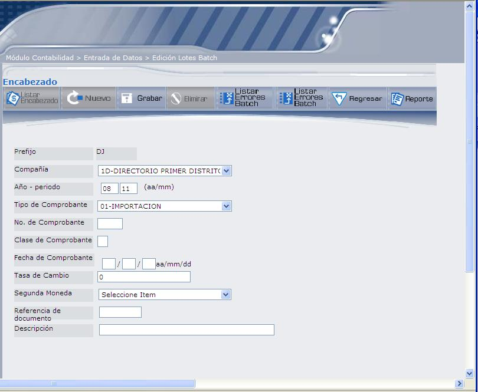
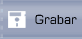
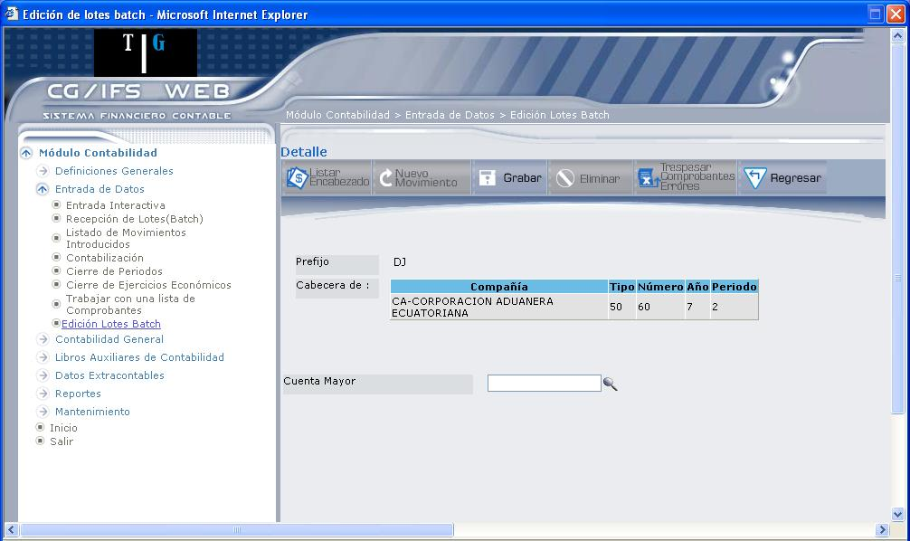

Edición Lotes Batch
Esta opción permite visualizar, modificar, suprimir o añadir Comprobantes o movimientos de un determinado Lote de entrada batch.
La finalidad de esta opción es permitir revisar el contenido de los Comprobantes de un lote que va a ser adicionado a CG/Web mediante la entrada batch. La validación de la información introducida se efectúa durante el proceso de ´ Entrada de Comprobantes en batch´, no obstante, en esta opción se valida que exista , Cuenta de Mayor y Cuenta de Auxiliar anotados.
Si existen los archivos de errores para un determinado lote, esta opción permite también recuperar los Comprobantes rechazados y modificar su contenido para volver a ser enviados a la entrada batch.
El usuario conectado debe tener autorización a la entrada de Comprobantes en batch para del Comprobante.
Al ingresar a esta opción se despliega la pantalla que muestra 1.27.
Figura 1. Edición Lotes Batch.
Prefijo:
Digite el prefijo del lote a editar, que debe corresponder a los dos primeros caracteres de los archivos de entrada batch. Son prefijos reservados AF, DA, DB, DC, DE, DF, DG, DH, DI, DJ, DK, EF y PR.
Luego presione el botón Listar Lotes o la tecla ENTER.
Figura 1. Edición Lotes Batch – Listar Lotes.
El listado despliega la lista de movimientos del comprobante seleccionado, cada movimiento presenta los siguientes vínculos:
- Select: permite desplegar el encabezado del comprobante, el mismo que podrá ser modificado o eliminado.
- Movimientos: permite desplegar los movimientos relacionados a la compañía, los mismos que podrán ser modificados o eliminados, también podrá crear un nuevo movimiento.
1. DETALLE DEL ENCABEZADO
Permite desplegar la pantalla para registrar el encabezado de un nuevo comprobante, en la pantalla que muestra 1.29.

Figura 1. Lotes Batch – Crear encabezado de Lote seleccionado.
Ingrese la siguiente información para registrar la cabecera de un nuevo comprobante.
Prefijo:
Despliega el código del prefijo del lote.
Compañía:
Seleccione la compañía en la que se va a registrar el comprobante. El sistema verifica que exista la autorización correspondiente.
Año - Periodo:
Digite el año y el periodo en el que se registra el comprobante. Por ejemplo: año 2007, periodo 02, se debe digitar
Tipo de Comprobante:
Seleccione el tipo de comprobante que va a registrar (recordar que debe ser un tipo definido para entrada batch).
Número de Comprobante:
Digite el número de comprobante.
Los siguientes campos no son validados durante la edición, se validan durante la entrada batch, que se explica en este manual en el punto 1.2, Recepción de Lotes (Batch).
Clase de Comprobante:
Digite la clase de comprobante. Este campo depende de la moneda que use la compañía.
Digite 0, si no usa Moneda Extranjera a nivel de Plan de Cuentas.
Digite 1, si se introducen todos los importes en Moneda Local.
Digite 2, si se introducen todos los importes en Moneda Extranjera. Esta clase de comprobante no admite movimientos IVA.
Digite 3, si se introducen todos los importes en ambas monedas. En este caso el usuario es el responsable de cuadrar el comprobante en las dos monedas.
Fecha de Comprobante:
Digite la fecha en la que se registra el comprobante, en el formato que se indica (aa/mm/dd)
Tasa de Cambio:
Digite la tasa de cambio de la moneda, en la que está trabajando.
Segunda Moneda:
Seleccione si trabaja con una segunda moneda.
Referencia de Documento:
Es una información opcional que puede utilizarse, por el usuario, como medio de clasificación de Comprobantes.
Descripción:
Digite alguna descripción del comprobante que está registrando.
A continuación presione el botón Grabar para registrar en el sistema.

2. DETALLE DE MOVIMIENTOS
Para registrar o consultar un movimiento, debe haber creado primero la cabecera del comprobante y dar clic sobre el vínculo movimiento, se despliega la pantalla que muestra 1.30, donde podrá editar o suprimir los movimientos.
Figura 1. Detalle de movimiento.
Antes de explicar las secciones 1 y 2, se explicará la función de los botones de la parte superior.
SECCIÓN 1:
Despliega el prefijo del lote y la cabecera del comprobante.
SECCIÓN 2:
Despliega el/los movimiento/s del comprobante, donde se puede observar un vínculo en cada movimiento. Al dar clic sobre este vínculo (Select) podrá visualizar y actualizar el movimiento, mediante la pantalla que muestra 1.31.
Figura 1. Detalle de movimiento.
BOTONES:

Figura 1. Mensaje – Movimiento Eliminado.
NUEVO MOVIMIENTO

Figura 1. Registrar nuevo movimiento.
Cuenta de Mayor:
Seleccione la cuenta de mayor correspondiente al movimiento. Digite el código y presione la tecla ENTER; caso contrario, dé clic en siguiente ícono (), el mismo que despliega una lista de cuentas. Seleccione la cuenta dando clic en el vínculo Select. Una vez que seleccione la cuenta, se despliegan los campos que muestra 1.34.
Figura 1. Detalle de movimiento – Nuevo Movimiento.
Ingrese la siguiente información: Descripción del movimiento que va a registrar, escoja el Tipo de Movimiento (Debe ó Haber) y el Importe.
Created with the Personal Edition of HelpNDoc: Easily create HTML Help documents